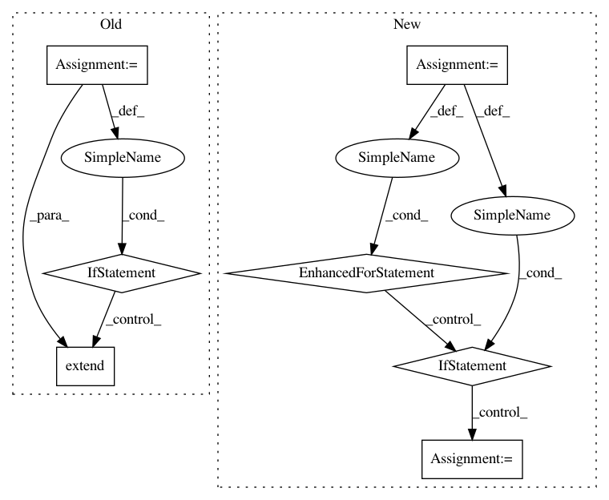

32ae80fe65595a38fd378bd3b2abaa3a8beeae01,smac/initial_design/initial_design.py,InitialDesign,select_configurations,#InitialDesign#,132
Before Change
configs = self._select_configurations()
// add random configurations if _select_configurations() returns less than expected budget
if self.fill_random_configs and len(configs) < self.init_budget:
random_configs = self.scenario.cs.sample_configuration(size=self.init_budget - len(configs))
if isinstance(random_configs, list):
configs.extend(random_configs)
else:
configs.append(random_configs)
return configs
else:
return self.configs
After Change
if self.configs is None:
self.configs = self._select_configurations()
for config in self.configs:
if config.origin is None:
config.origin = "Initial design"
// add this incumbent right away to have an entry to time point 0
self.traj_logger.add_entry(train_perf=2**31,
incumbent_id=1,
incumbent=self.configs[0])
In pattern: SUPERPATTERN
Frequency: 3
Non-data size: 7
Instances
Project Name: automl/SMAC3
Commit Name: 32ae80fe65595a38fd378bd3b2abaa3a8beeae01
Time: 2019-12-02
Author: ashraaghav@gmail.com
File Name: smac/initial_design/initial_design.py
Class Name: InitialDesign
Method Name: select_configurations
Project Name: neuroailab/tnn
Commit Name: fde7cc023ea226bf01563d0cbce919e85f8701fd
Time: 2016-10-02
Author: qbilius@gmail.com
File Name: model.py
Class Name:
Method Name: _last
Project Name: andresriancho/w3af
Commit Name: 69ff07c2bf368ebc0d6f0700a9735451ed851999
Time: 2018-01-02
Author: andres.riancho@gmail.com
File Name: w3af/plugins/audit/global_redirect.py
Class Name: global_redirect
Method Name: _javascript_redirect